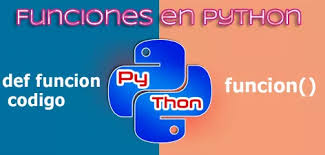

Contenido del curso

- Introducción python
- Funciones de bajo orden
- Función map, filtrar y reduce
- Funciones puras
- Patrones de diseño
- Addpter
- Strategy
- Patrón arquitectura mvc (Microservicios)
- Modelo vista controlador
- Singleton
Descripción de la imágen